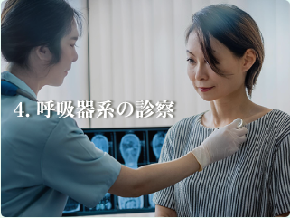

00-0000-0000
000-0000 東京都台東区上野0丁目0-0


当院では、地域の皆様の健康を支えるため、幅広い内科診療を行っております。日常的な体調管理から、各種の検査や治療に至るまで、どんなお悩みもお気軽にご相談ください。
1.一般内科診療
風邪や発熱、喉の痛み、頭痛、腹痛などの症状を中心に、一般的な体調不良の診療を行っています。また、原因不明の不調や軽い症状であっても、早期診断に努めております。
2.生活習慣病の診断・治療
高血圧症、糖尿病、脂質異常症（高コレステロール血症）、メタボリック症候群など、生活習慣病の診断と治療を行います。病気の進行を予防し、健康維持のための生活指導や薬物療法を行います。
3.消化器系の診察
胃痛、胃もたれ、胸やけ、便秘、下痢などの消化器系の不調に対応しています。必要に応じて胃カメラや超音波検査などを実施し、胃腸の健康をサポートします。
4.呼吸器系の診察
当院では引き続き、新型コロナウイルス感染症対策を徹底しております。ご来院の際には、マスクの着用、手指消毒にご協力をお願いいたします。また、発熱や風邪症状のある方は、事前にお電話でご相談いただけるとスムーズにご案内が可能です。
5.健康診断・各種検査
2024年より、オンライン診療を一部導入いたしました。通院が難しい方や、遠方にお住まいの方にご利用いただけます。ご希望の方は、当院スタッフまでお問い合わせください。 皆様の健康をサポートできるよう、スタッフ一同努めてまいります。何かご不明な点がございましたら、お気軽にお問い合わせください。
6.予防接種
インフルエンザや肺炎球菌などの各種予防接種を行っています。定期的な接種で感染予防と体調管理を支援いたします。予防接種は予約制となりますので、事前にお問い合わせください。
7.禁煙外来
禁煙をご希望の方に、禁煙治療とサポートを行っています。必要に応じて、ニコチン依存症の治療薬を使用し、無理なく禁煙が継続できるようお手伝いいたします。
地域の皆様に安心してご来院いただけるよう、私たちスタッフ一同、誠心誠意対応いたします。それぞれの専門性と温かさを活かし、皆様の健康を支えるパートナーとしてお力になれるよう努めてまいります。
院長
佐藤 太郎
専門分野:
生活習慣病、呼吸器疾患、内科全般
経歴：
光明大学医学部卒業後、瑞穂中央総合病院で内科医として10年間勤務。その後、地域医療への貢献を目指し、佐藤内科医院を開院。
メッセージ：
患者様にとって気軽に相談できる「かかりつけ医」を目指しています。どんな小さな不安でも、まずはご相談ください。
看護師長
鈴木 真理
得意分野:
患者様への親身な対応、注射・採血技術、健康管理指導
経歴：
白桜大学看護学部卒業後、緑が丘大学病院で10年勤務。地域医療に携わりたい思いから、佐藤内科医院に入職。
メッセージ：
安心して治療を受けていただけるよう、いつも笑顔でお待ちしています。些細なことでもお気軽にご相談ください。
事務長
田中 和彦
専門分野：
予約・受付対応、医療保険手続き、スムーズな会計管理
経歴：
明邦医療専門学院卒業後、光寿記念病院などで医療事務を経験。現在は佐藤内科医院で事務長を務める。
メッセージ：
皆様がスムーズに診療を受けられるよう、受付や手続きのサポートに力を入れています。わかりやすい説明を心がけていますので、気になる点があればお気軽にお尋ねください。
臨床検査技師
高橋 由美
専門分野：
血液検査、心電図検査、超音波検査
経歴：
東都臨床検査技術専門学校を卒業後、武蔵中央医療センターにて15年間の臨床検査技師としての経験を積む。
メッセージ：
検査は不安が伴うこともありますが、できるだけリラックスしていただけるよう、優しく丁寧な対応を心がけています。
医療事務
山本 花
専門分野：
受付業務、カルテ管理、医療費計算
経歴：
希望医療カレッジ卒業後、さくら診療所にて受付業務を担当。現在は佐藤内科医院で患者様対応を担当。
メッセージ：
皆様に気持ちよくご利用いただけるよう、笑顔と真心を大切にしております。初めての方もどうぞ安心してお越しください。